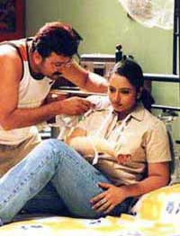

Storyline

Yathrakkarude Shraddhakku directed by Sathyan Anthicaud, is a family
entertainer. Jayaram and Soundarya, who are employed in a big city
meet as strangers and are forced by circumstances to share an apartment,
which leads to a piquant situation. The strength of the film is Srinivasan's
innovative script with a simple storyline blended well by Satyan Anthicaud.
The film's commercial success is very crucial for Jayaram's survival
as a top line hero.
Review
Satyan Anthikkad has finally managed to give Jayaram the long elusive
hit, with a bold and innovative Yatrakkarude Sraddakku. Satyan, known
for his light-hearted family entertainers, has this time teamed with
scriptwriter Srinivasan and has churned out a rather unusual love
story. Jyothi (Soundarya) a software engineer gets a job in Chennai.
On her way to join work, she meets Ramanujam (Jayaram) in the train.
Ramanujam is an engineer working in the same city and soon they become
friends. They part at the railway station but meet occasionally. Jyothi
finds it difficult to get a rented house and on insistence of their
common friend Paul (Innocent) she starts sharing an apartment with
Ramanujam. She treats Ramanujam as her close friend, but he has a
silent admiration for her. One day she shocks Ramanujam by inviting
him for her engagement with Pradeep, and he goes for it along with
Paul. But after getting drunk at the function, Paul blurts out to
the invitees and Pradeep that Jyothi shared an apartment with Ramanujam
in Chennai and soon the marriage is dropped. On the rebound Ramanujam
ties the knot with Jyothi at the same muhurtham and they come to Chennai.
But Jyothi takes her sweet revenge on Ramanujam by not talking to
him or accepting him as her husband. And Ramanujam finally decides
to tell all the truth to Pradeep and sent her with him. Will Jyothi
go with Pradeep in the climax? Jayaram works and reworks all his tried-and
tested comic antics all over again. Soundarya who is new to Malayalam
steals the show, as the matured Jyothi and has come out with an excellent
performance. Innocent, Siddique and Srinivasan have all excelled in
their roles.